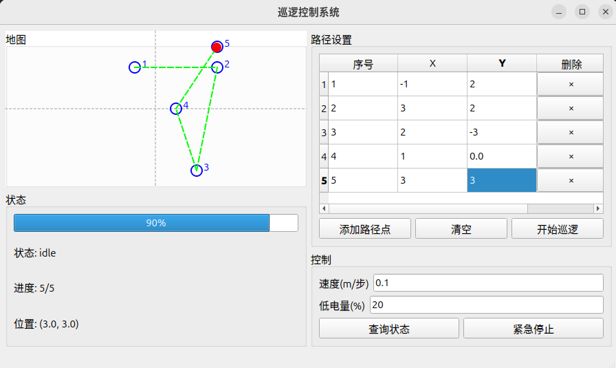

效果演示

一次完整巡逻任务收尾 · 5 个路径点全部到达（进度 5/5，状态 idle）· 地图实时绘制路径连线与机器人位置，电池 90%
项目概述
一套完整的巡逻机器人控制系统：5 个 ROS2 节点各司其职——传感器模拟、动作服务端（逐点导航 + 实时反馈）、调度控制器（多目标链式调度）、命令服务层、状态监控，外加一个 Qt 控制台实现路径编辑、巡逻启动/急停、电池/进度/位置实时显示与巡逻地图绘制。项目覆盖 ROS2 三类通信（话题 / 服务 / 动作）的完整工程实践，自定义 6 个接口定义文件，界面与逻辑通过 QThread + 信号槽双线程模型解耦。
系统架构
[sensor_node]──battery/imu──►┐
[command_service] │
├─ /set_path ─►patrol_path─┤
├─ /emergency_stop ─►flag───┤ [patrol_controller]
└─ /get_status ├──链式调度──► /patrol ──► [patrol_action_server]
├──patrol_status─►┐ └─feedback→odom(Pose2D)
[status_monitor]◄─聚合────────┘ │
[Qt patrol_gui]
RosThread(QThread) ⇄信号槽⇄ PatrolGui
订 battery/status/odom · 调 3 服务
自定义接口（6 个）
# Goal → Result
float64 x # 目标点X坐标（米）
float64 y # 目标点Y坐标（米）
---
bool arrived # 是否到达
string message # 结果描述
---
# Feedback
float64 current_x # 当前位置
float64 current_y
float64 distance # 剩余距离
SetPath: x_points[] + y_points[] → success + message
EmergencyStop: （无请求） → success + message
GetStatus: （无请求） → battery + state + current_point
PatrolStatus: current_point + total_points + state
（state: patrolling/idle/returning/emergency_stop）
PatrolPath: x_points[] + y_points[]（服务层→调度层解耦）
功能模块
HandleGoal 无条件接受目标，HandleAccepted 在独立线程模拟逐点移动（速度积分推进），按固定频率发布 Feedback（当前位置 + 剩余距离）并同步发布 /odom（Pose2D）供界面绘制；HandleCancel 支持中途取消（低电量返航/急停联动依赖此能力）。
收到路径后逐点下发 Patrol 目标；result 回调里链式调用 SendNextGoal()——SUCCEEDED 则推进序号继续，CANCELED 则停止，全程无需轮询。goal_response 回调保存 goal_handle 供取消，feedback 回调同步 PatrolStatus 话题。
电量 <20% 且巡逻中：async_cancel_goal 取消当前动作，状态切 returning，自动下发回原点目标，返航完成回 idle——三级状态流转全部事件驱动。急停（emergency_stop_flag）同样走"取消 + 状态切换"路径，且返航途中急停可随时打断。
RosThread(QThread) 独立跑 rclcpp::spin，3 个订阅收到数据即 emit 信号（BatteryUpdated/StatusUpdated/OdomUpdated），Qt 主线程槽函数安全更新界面；3 个服务客户端用 async_send_request + lambda 回调异步调用（带 2s 超时探测），全程不阻塞事件循环；析构 quit() + wait() 保证 ROS2 线程先于 context 关闭。
QPainter 反走样绘制：灰色虚线坐标轴、蓝色圆点路径（序号标注）、绿色虚线连线、红色实心圆为机器人当前位置（/odom 驱动，每次到达触发 update() 重绘）。坐标换算含 30px/m 比例缩放 + Y 轴翻转（屏幕 Y 向下与地图 Y 向上的手眼校正）。
QTableWidget 四列（序号只读 / X 可编辑 / Y 可编辑 / 行内删除按钮），增删后自动同步成员变量；command_service 节点收 SetPath 后发布 patrol_path 话题给调度层——服务层（请求-响应）与调度层（话题驱动）解耦，状态查询 GetStatus 聚合电池/状态/进度一次返回。
关键技术点
- 双线程模型：Qt 主线程只跑界面事件循环，RosThread(QThread) 子线程独立 rclcpp::spin——ROS2 回调永不阻塞 UI
- 跨线程信号槽：子线程 emit → 主线程槽（Qt 自动排队连接），ROS2 数据安全抵达界面层
- 异步服务调用：async_send_request + SharedFuture lambda 回调，2s wait_for_service 超时探测，UI 零卡顿
- 动作三回调全用上：goal_response（存 handle 供取消）/ feedback（同步状态）/ result（链式推进）
- 三类通信各司其职：话题（状态流）、服务（命令+查询）、动作（长时导航任务）——按语义选通信类型
- 类与入口解耦：每节点 header/cpp/main 三件套，类可被其他节点复用（工程化组织）
- 接口自定义 6 个：1 action + 2 msg + 3 srv，全部 rosidl 生成 + CMake rosidl_get_typesupport_target 接入
- 线程生命周期：析构 quit()+wait() 保证 ROS2 线程先退，unique_ptr 全程管理无裸 delete
运行架构
6 个组件各自独立进程，任何 ROS2 环境可跑（Jazzy 验证）：
终端1 sensor_node（模拟电池/IMU） · 终端2 command_service（命令入口）
终端3 patrol_action_server（动作服务端） · 终端4 patrol_controller（调度核心）
终端5 status_monitor（状态聚合） · 终端6 patrol_gui（Qt 控制台）
演进路线：调度层目标点位可对接 Nav2 NavigateToPose 动作，从"模拟移动"升级为真实机器人导航（接口不变，只换动作服务端）。